İslambol Yayınları · 78 kitap
Tarihi belgeyle ve tanıklıkla okuyun
Osmanlı’nın son dönemi, Milli Mücadele ve Cumhuriyet’in ilk yıllarına dair hatırat, araştırma ve arşiv belgesi yayınları.
- 78 kitap
- 36 yazar
- 9 önizlemeli kitap
- 7 set
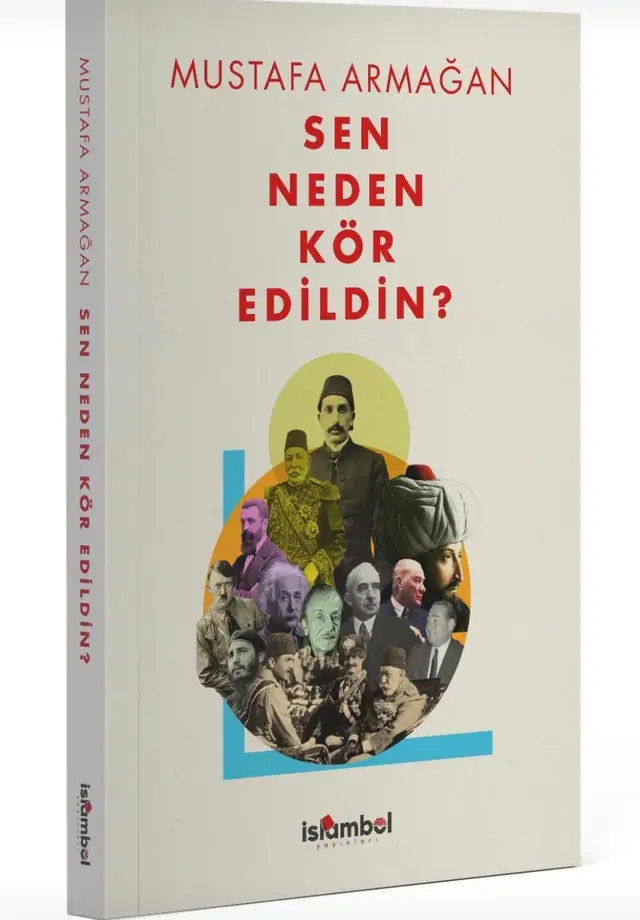
Kitaptan ilk sayfalar · 5 kitap daha
Önizlemeli kitaplar
Bu kitapların ilk sayfalarını sayfa çevirerek okuyabilirsiniz.
Önizlemeli · Eylül 2025
Filistin-Suriye Cephesinde Kahramanlar ve Hainler
Cevat Rıfat Atilhan · 112 sayfa
İlk sayfalara göz atÖnizlemeli · Eylül 2025
Menemen Hadisesinin İçyüzü
Cevat Rıfat Atilhan · 80 sayfa
İlk sayfalara göz atKatalog · en yeni 8 kitap
Yeni çıkanlar
Yayınevinin son dönemde yayımladığı ve ön siparişe açtığı kitaplar.

36 yazar · en çok kitabı olan 8
Yazarlar
Katalogda en çok kitabı bulunan yazar ve araştırmacılar.
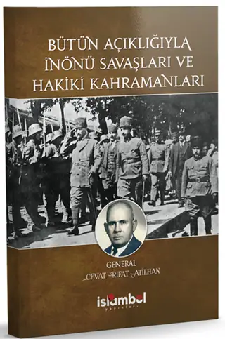
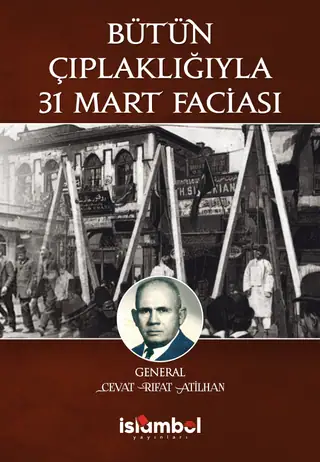
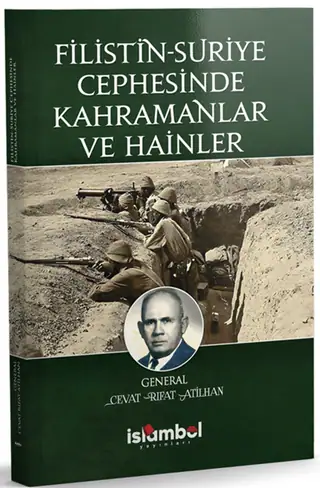
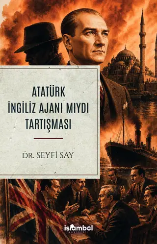
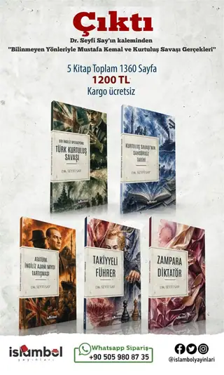
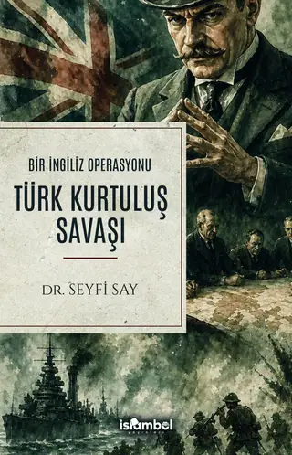
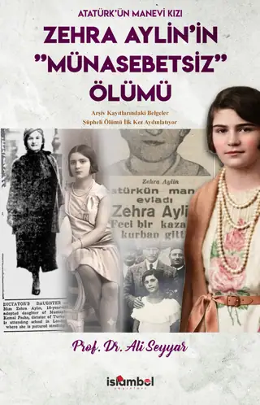
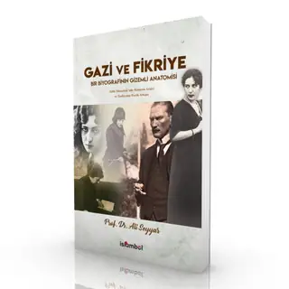
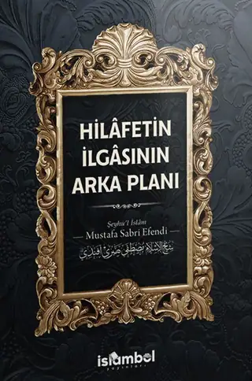
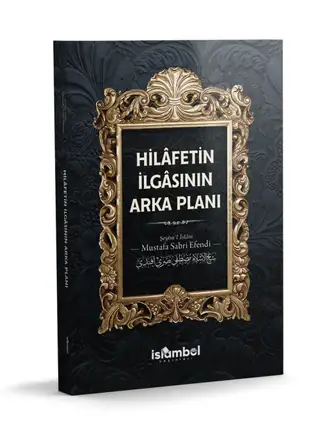
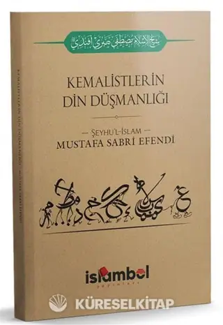
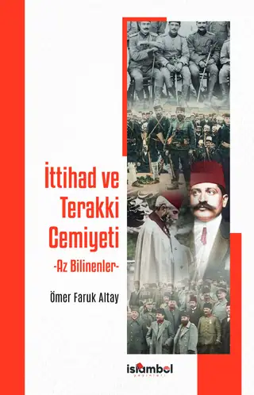
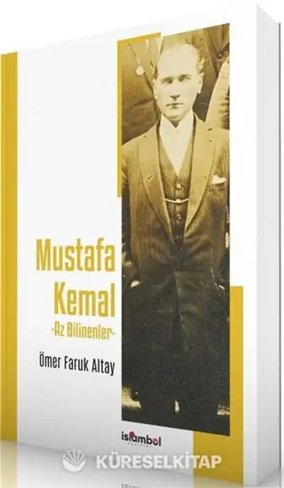
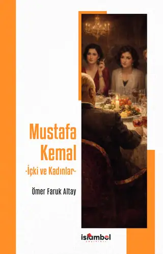
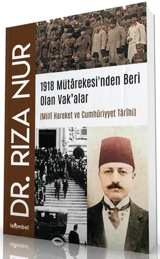
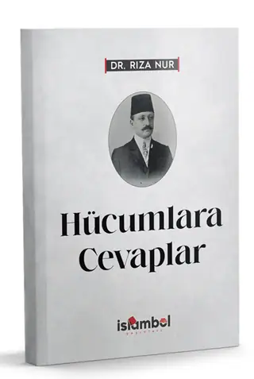
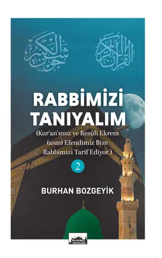
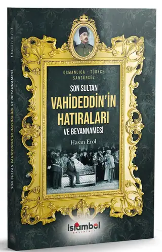
Yayınevi
Yayın çizgisi
Yayınevi hangi alanlarda çalışıyor: kısa bir bakış.
Osmanlı’nın son dönemi, Milli Mücadele ve Cumhuriyet’in ilk yıllarına odaklanan hatırat, araştırma ve arşiv belgesi yayınları; yanında İslam düşüncesi eserleri ve Osmanlıca tıpkıbasımlar.
- Yakın tarih
- Hatırat ve tanıklıklar
- Arşiv ve belge yayınları
- İslam düşüncesi
- Edebiyat
4 kitabevi sitesi · WhatsApp hattı
Nereden alınır
Kitaplar yayınevinin WhatsApp hattından ve listelenen kitabevi sitelerinden edinilebilir.
WhatsApp sipariş hattı
Yayınevine doğrudan yazın
0505 980 87 35
Mesaj, kitabın adıyla hazır açılır.
Bu site bir satış mağazası değildir; kitaplar listelenen satış kanallarından ve WhatsApp hattından edinilir. Güncel satış koşulları için ilgili satış sayfasına bakın.